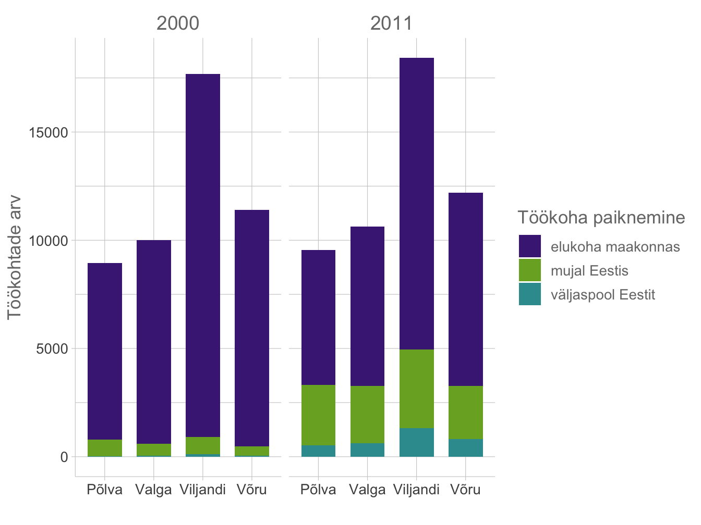
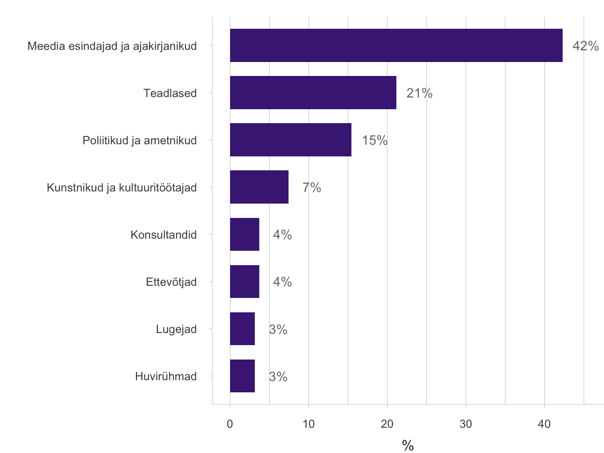
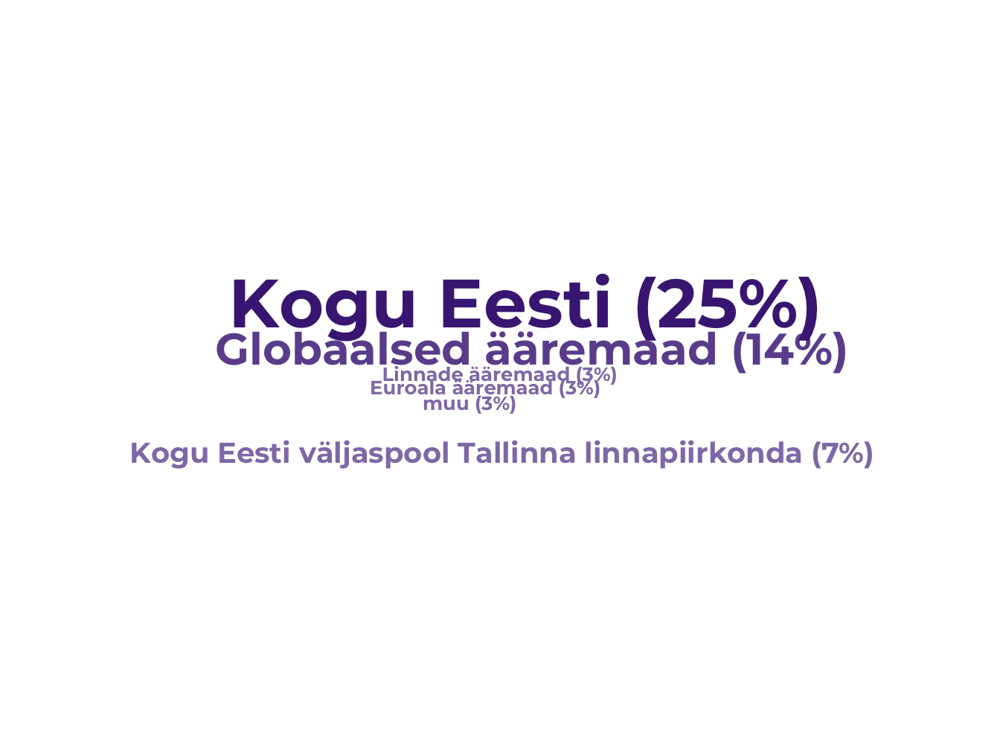
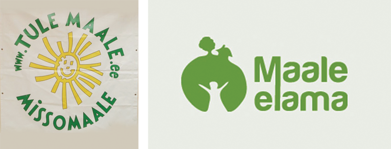

1.2 Keskuse-ääremaa lõhe on Eestis viimase 30 aasta jooksul süvenenud
- Ääremaastumine on protsess, mille käigus majanduslikud, ühiskondlikud, poliitilised ja kuvandiga seotud tegurid mõjutavad ebavõrdselt sotsiaal-ruumilist arengut, tekitades ääremaid. Nende tegurite mõju tulemusena tekib nii ülemaailmne, regionaalne kui ka kohalik keskuse-ääremaa hierarhia, mis avaldub elanike, töökohtade ja teenuste kaos ääremaades ja koondumises keskustesse.
Piirkondade konkurentsivõimele keskenduv regionaalpoliitika Eestis ja Euroopa Liidus ei ole aidanud ääremaastumist ümber pöörata.
Viimastel kümnenditel on enamikus Kesk- ja Ida-Euroopa riikides süvenenud ühiskondlik ja ruumiline ebavõrdsus (Lang ja Görmar 2019). Ka Eestis on piirkondlik ebavõrdsus kasvanud, mille tõttu suur osa Eesti asustussüsteemist – varem majanduslikult ja sotsiaalselt elujõulised väikelinnad ja maapiirkonnad – on muutunud riigisiseseks ääremaaks. Kuna enamik töökohti asub suuremates linnades, on maalt lahkumine eriti noorema põlvkonna puhul muutunud tavaliseks. Üha raskem on tagada elutähtsate teenuste võrdset kättesaadavust kogu riigis, sest ääremaade rahvastik väheneb ja vananeb ning endises mahus teenuseid paljudes kohtades enam ei vajata. Selles artiklis lähtume Eestis juurdunud käsitusest, mille kohaselt ääremaastumine tähendab väljarännet ning töökohtade ja teenuste kadu keskustest eemal olevatest piirkondadest (Säästva arengu komisjon 2010), kuid rõhutame, et need objektiivsed protsessid on läbi põimunud ääremaa subjektiivse häbimärgistamisega. Lisaks arutleme, kuivõrd on Eesti ja Euroopa Liidu regionaalpoliitika aidanud keskuse-ääremaa lõhet vähendada. Kahanemisprotsesside kirjeldamiseks tugineb artikkel Statistikaameti rahvastiku- ja majandusstatistika andmetele (jooksev rahvastikustatistika, 2011. aasta rahvaloendus, regionaalse sisemajanduse koguprodukti (SKP) andmed). Regionaalpoliitika suundumuste osas toetume 2018. aastal Tartu Ülikoolis kaitstud Bradley Loeweni doktoritöö tulemustele (Loewen 2018; Loewen ja Schulz 2019). Doktoritöö analüüsib Eesti ning teiste Kesk- ja Ida-Euroopa riikide regionaalpoliitika arengut ning riikide regionaalpoliitika seoseid Euroopa Liidu ühtekuuluvuspoliitikaga. Subjektiivsete ääremaastumise protsesside kirjeldus tugineb 2017. aastal Tartu Ülikoolis kaitstud Bianka Plüschke-Altofi doktoritöö tulemustele (Plüschke-Altof 2017; Plüschke-Altof ja Grootens 2019), et analüüsida Eesti maakohtade ääremaalise kuvandi teket ja sellega vastanduvaid kohalikke algatusi.
Ääremaastumine on iseennast taastootev nõiaring
Süveneva piirkondliku ebavõrdsuse kõige selgem ilming on majandusliku ja inimkapitali koondumine Eesti suurematesse linnapiirkondadesse. See toimub enamasti maakohtade ja väikelinnade arvelt, kust need ressursid lahkuvad ja seejärel piirkondlikus arengus puuduvad. Kui Tallinna linnaregioon (Harjumaa) välja arvata, seisid kõik teised Eesti maakonnad aastatel 1995–2017 silmitsi rahvastikukaoga. Sel ajavahemikul kasvas Harjumaa elanikkond 5%. Tartumaa olukord oli suhteliselt stabiilne (rahvastikukadu 5%), samal ajal kui ülejäänud maakondades vähenes rahvaarv märkimisväärselt: 12–27% (joonis 1.2.1). Peale suurematesse linnadesse elama asumise on oluline roll ka ääremaalt teistesse riikidesse suunduval väljarändel, mida lihtsustas Eesti liitumine Schengeni alaga 2004. aastal. Ka viimaste aastate Eesti positiivne välisrändesaldo, sealhulgas siit varem lahkunud inimeste tagasiränne, soosib Statistikaameti andmetel pealinnaregiooni, näiteks 2018. aastal asus 57% Eestisse asunutest elama Harjumaale. Lisaks sellele viibivad ka ametlikult Eestisse registreeritud elanikud sageli suure osa ajast välismaal. 2011. aasta rahvaloenduse andmetel töötas välismaal 3% (Harjumaa) kuni 8% (Pärnumaa) Eesti maakondade elanikest, kelle registreeritud elukoht asus Eestis.
Joonis 1.2.1. Eesti regionaalne polariseerumine: rahvastikumuutus ja sisemajanduse koguprodukti jaotumine maakonniti 1995. ja 2017. aastal
## [1] "KAART"Allikas: Statistikaamet 2000; 2011.
Rööpselt rahvastiku koondumisega aastatel 1995–2017 soosis majanduskasv Harjumaad, mille panus SKPsse suurenes 54%-lt 64%-le. Ka Tartumaa panus SKPsse suurenes, muude maakondade oma aga vähenes ning suurim oli langus Kirde-Eesti tööstuspiirkondades. Keskustest väljaspool on töökohti üha vähem. Tavaline on maalt linna tööl käimine. Hiljutised kvaliteetsed pendelrände andmed puuduvad, kuid juba 2007–2009 tehtud uuringu (Ahas jt 2011) andmetel oli Eestis pendelrändajaid 28% elanikkonnast (380 000 inimest).
Asustussüsteem on üha enam kaldu suuremate linnaregioonide või koguni üksnes pealinnapiirkonna suunas.
Need üldised suundumused kinnitavad, et piirkondlik ebavõrdsus on Eestis objektiivselt kasvanud (Annist 2017; Noorkõiv 2009). Piirkondliku ebavõrdsuse teke on otseselt seotud rahvastiku kahanemisega ja majandustegevuse kokkukuivamisega ääremaal. Kui töökohad ja teenused koonduvad üksnes suurematesse keskustesse, siis maakohtade ja väikelinnade elanikele tähendab see töö ja muu eluks vajaliku kadumist nende elukoha lähedusest. Asustussüsteem on üha enam kaldu suuremate linnaregioonide või koguni üksnes pealinnapiirkonna suunas. Piirkondliku ebavõrdsuse suurenemine ja väljaspool keskusi asuvate piirkondade kahanemine on üldine arengusuund ka teistes Kesk- ja Ida-Euroopa maades ning mujalgi Euroopas (Lang ja Görmar 2019). Eesti väikelinnad ja maapiirkonnad on ääremaad lausa kahel geograafilisel tasandil – nad asuvad kaugel Eesti peamistest keskustest ja ühtlasi väga kaugel Euroopa tuumikpiirkondadest. Seetõttu on ääremaastumise kui ühiskondlikku ja ruumilist ebavõrdsust tootva mitmekülgse ja mitmetasandilise protsessi ümberpööramine veelgi raskem.
Sarnaselt teiste Euroopa riikidega on Eestit mõjutanud sellised üleilmsed trendid nagu deindustrialiseerumine, automatiseerimine ja põllumajandussektori kahanemine (Raagmaa ja Noorkõiv 2013). Nõukogude Liidu kokkuvarisemisega kaasnes 1990. aastatel väga lühikesele ajale koondunud majanduslik vapustus. Mujal maailmas kümnendite jooksul toimunud ümberkorraldused leidsid Eestis aset vaid paari aastaga (Annist 2017). Töökohtade kadumine tööstus- ja põllumajandussektoris mõjutas tugevasti Kirde-Eesti tööstuspiirkondi, väikeseid monofunktsionaalseid tööstuslinnu üle Eesti ning Lõuna-Eesti põllumajanduspiirkondi (sh Viljandi-, Valga-, Võru- ja Põlvamaa, mida vaatleme allpool lähemalt). Kuna varasem tugev põllumajandus toetas ka teenusmajandust (isikuteenused, tootmisteenused, avalik haldus), tabas majanduse ümberkorraldamine põllumajanduspiirkondi eriti rängalt. Arvudes vähenes primaarsektori (peamiselt põllumajanduse) tööjõu osakaal nimetatud Lõuna-Eesti maakondades 37%-lt 1990. aastal vaid 9%-le 2017. aastal. Hõivatute koguarv vähenes 91 400-lt 1990. aastal 61 400-le 2017. aastal, primaarsektoris 33 600-lt 5600-le. Samal ajavahemikul vähenes tööhõive veel rohkem ainult Ida-Virumaal (üle 50%). Uusi töökohti on loodud teenindussektoris, eeskätt maaturismi valdkonnas (Raagmaa ja Noorkõiv 2013), mida toetab suvehooajal maal elamise tendents (hinnanguliselt 5% Eesti elanikest – Ahas jt 2011). Seni ei ole aga uued töökohad korvanud põllumajandushõive vähenemist.
Majanduse ümberkorraldumine ning uued elukorralduslikud ja pendelrände mustrid toetavad rahvastiku vähenemise nõiaringi, viies oluliste avalike teenuste (nt koolide) kadumiseni, mis omakorda süvendab kahanemist.
Ehkki põllumajanduses toimusid peamised hõivemuutused juba 1990. aastatel, ei ole hõive vähenemine siiani peatunud. Lõuna-Eesti nelja maakonna koguhõive on püsinud stabiilsena alates 2000. aastate algusest (63 000 töötajat 2001. aastal), kuid elukoha lähedal on vähem töökohti, mistõttu on kasvanud tööalane pendelränne (joonis 1.2.2). Kui 2000. aastal töötas enamik Lõuna-Eesti maakondade töötavast elanikkonnast oma kodumaakonnas ja mujal töötati harva, siis 2011. aastaks töötas nende maakondade elanikest 23% väljaspool maakonda ja 7% väljaspool Eestit. Hargmaise rände puhul, mil aeg-ajalt viibitakse kodunt eemal tööl, kuid seos elukohaga jääb alles, on eestimaalastele kõige olulisem sihtpunkt Soome (Annist 2017; Anniste jt 2017). See tähendab, et paljud pendelrändajad viibivad kodupiirkonnas ainult nädalavahetustel või veelgi harvem, mistõttu pikemas perspektiivis võivad ka nende pered sealt lahkuda. Majanduse ümberkorraldumine ning uued elukorralduslikud ja pendelrände mustrid toetavad rahvastiku vähenemise nõiaringi, viies oluliste avalike teenuste (nt koolide) kadumiseni, mis omakorda süvendab kahanemist.
Joonis 1.2.2. Viljandi-, Valga-, Võru- ja Põlvamaa elanike töökohtade paiknemine elukohamaakonnas, mujal Eestis või väljaspool Eestit 2000. ja 2011. aastal
Allikas: Statistikaameti 2000 a ja 2011 a rahvaloendused.
Maapiirkondade ja väikelinnade häbimärgistamine süvendab ääremaastumist
Inimkapitali kaoga seotud objektiivsete näitajate kõrval lisandub ääremaastumisele subjektiivne mõõde. Eesti maapiirkondade ja väikelinnade sotsialismiajajärgse rahvastikukaoga käsikäes halvenes maapiirkondade kuvand, mis on Eestis ajalooliselt olnud väga positiivne, olles näiteks seotud talumaastiku ja maaelu kui rahvusliku identiteedi osaga (Nugin 2014). Koos piirkondliku ebavõrdsuse süvenemise, põllumajanduse kahanemise ja linnapiirkondade kiire kasvuga muutub ka maaelu tähendus. Praegu seostuvad maapiirkonnad ja väikelinnad vähem põllumajandusega ning enam puhkemajanduse ja turismiga (Raagmaa ja Noorkõiv 2013). Kuigi turistide ja maakodu ostjate ligimeelitamiseks tõstavad kohalikud otsustajad ja turundajad idüllilise maaelu ja looduse positiivset kuvandit esile, valitseb avalikus aruteluruumis tendents samastada maapiirkondi ja väikelinnu negatiivse ääremaaks olemisega.
Kuna ääremaa mõiste ei ole avalikus aruteluruumis neutraalse tähendusega, vaid seostub enamasti puuduste ja probleemidega, on ääremaakuvand Eesti maapiirkondadele potentsiaalselt häbimärgistav, mõjutades inimeste otsust neid paiku külastada, sinna investeerida või elama asuda, seeläbi ühtlasi süvendades ka objektiivset ääremaastumist (Plüschke-Altof 2017). Seepärast on oluline mõista, kuidas tekivad kohakuvandid või -hinnangud. Kriitiliste ühiskonnateemade aruteluplatvorme on palju, alates poliitikast ja turundusest kuni teadus- ja populaarkirjanduseni. Oluline roll avaliku arutelu laiema publiku ette viimisel on aga meediakanalitel, sealhulgas ka mõjukatel Eesti ajalehtedel, näiteks Postimehel, Eesti Päevalehel ja Maalehel. Nendes ajalehtedes 2011–2015 avaldatud arvamusartiklite põhjal tehtud meediaanalüüsis uuriti täpsemalt, kes ja kuidas Eesti trükimeedias maakohtade ääremaalist kuvandit loob. Lisaks viidi läbi 12 süvaintervjuud mõjukate arvamusliidrite ja toimetajatega (samas).
Väljendades oma nägemust maakohtade ja -elu iseloomust, ääremaastumise protsessist või Eesti regionaalpoliitikast, loovad arvamusliidrid kuvandi, mis levib Eesti ühiskonnas laiemalt.
Küsimus, kellel on Eesti trükimeedias kui ühes osas avalikust aruteluruumist sõnaõigus ja keda kuulatakse, on demokraatlikus riigis tähtis. Isegi kui kuvand on loodud meie kõikide poolt, on ühiskonna arvamuseliidil oluline roll maakuvandi tekkimisel. Eestlastele tuntud maaelukuvandi kujundajateks võib näiteks nimetada kirjanik A. H. Tammsaaret või Eesti Vabariigi presidenti Lennart Merd. Väljendades oma nägemust maakohtade ja -elu iseloomust, ääremaastumise protsessist või Eesti regionaalpoliitikast, loovad arvamusliidrid kuvandi, mis levib Eesti ühiskonnas laiemalt. Uuringud (Plüschke-Altof 2017) selgitavad, et arvamusartiklite autorid on peamiselt ajakirjanikud, teadlased, poliitikud ja kultuuriinimesed, kes esindavad linlikke institutsioone, nagu meediaväljaanded, riigiasutused, ülikoolid või kultuuriasutused (86% arvamusartiklite autoritest – joonis 1.2.3). Kuigi linlike institutsioonide esindamine ei tähenda ilmtingimata linnas elamist (eriti arvestades ka hooajalise maaelanikutega), kinnitab analüüs siiski, et kõige vähem võtavad arvamusartiklites sõna just maapiirkondade ettevõtjad, kohalikud lugejad ja huviühingute esindajad (ca 10% arvamusartiklite autoritest). See tähendab et just maapiirkondade ja väikelinnade esindajad paistavad olevat vähem kaasatud arutellu mahajäänud ääremaade üle.
Joonis 1.2.3. Kes kujundavad maapiirkondade kuvandit Eesti trükimeedias?

Märkus: Arvutused põhinevad 296 arvamusartiklil, mis avaldati ajalehtedes Postimees, Eesti Päe- valeht ja Maaleht perioodil 2011–2015. Arvamusliidriks selles analüüsis loeti artikli autorid ja kaas- autorid, vastutavad ajakirjanikud ja toimetajad.
Allikas: Plüschke-Altof 2017.
Küsimuses, kuidas ääremaalist kuvandit luuakse, näitab analüüs (joonis 1.2.4), et arvamusartiklites seostatakse sõna „ääremaa“ enamasti just maapiirkondadega (52% juhtudest), viidates konkreetsetele maakohtadele või -piirkondadele üldiselt, jättes konkreetsed kohad nimetamata (nt „kauge metsaküla“). Osati (7,3%) kirjeldatakse ääremaana ka kogu Eestit väljaspool Tallinna ja selle ümbrust, mis peegeldab taas piirkondlikku koondumist. Harvem kui maakohtade kontekstis (42%) käsitletakse ääremaad ülemaailmses või Euroopa Liidu kontekstis (nt Eesti puudulik lennuühendus, majanduslik sõltuvus EList, Eesti poliitiline roll maailmas). Üksikutel juhtudel kõneldakse ka linnalisest ääremaast (nt probleemsed linnaosad või linna äärealad, 3%). Maapiirkondade samastamine ääremaaga võib olla nendele häbimärk seetõttu, et ääremaad ei kirjeldata neutraalselt, vaid majanduslikult mahajäänu, geograafiliselt kauge, poliitiliselt sõltuva, institutsiooniliselt nõrga ja tuntavate sotsiaalsete probleemidega kohana, mis asub maal. Mõnel juhul võimendab maapiirkondade – või õieti mittelinnaliste piirkondade – ääremaakuvandit ka narratiiv, mis rõhutab ääremaa kogukondade enda vastutust kohaliku arengu (ja ühtlasi mahajäämuse) eest või kujutab neid omal süül läbikukkumise näidetena. Ajalehtede arvamusartiklites viidatakse näiteks kohalikule „kolhoosimentaliteedile“ või ebamõistlikule vastuseisule „tänapäevase“ arengu suhtes. Seega maapiirkondi mitte ainult ei seostata negatiivse ääremaisusega, vaid pannakse neile ka vastutus, jättes mulje, et „maal pole midagi head“. Kordamise kaudu muutub seos lugejaskonna ja laiema üldsuse silmis iseenesestmõistetavaks.
Joonis 1.2.4. Mis kohti kirjeldatakse Eesti trükimeedias kui ääremaad?

## NULL## NULL## quartz_off_screen
## 2Märkus: Arvutused põhinevad 296 arvamusartiklil, mis avaldati ajalehtedes Postimees, Eesti Päevaleht ja Maaleht perioodil 2011–2015.
Allikas: Plüschke-Altof 2017.
Olgugi et arvamusartiklite meediaanalüüsis domineerib maapiirkondade negatiivne ääremaakuvand, on olemas ka vastupidine mõttemall, mida väljendavad eelkõige maapiirkondade esindajad (ettevõtjad, kohalikud poliitikud, huviühingute esindajad jt) ja mis toetub maaelu positiivsetele tähendustele. Seda mõttemustrit peegeldavad arvamusartiklid, mis kirjeldavad maapiirkondi Eesti rahva hällina ühes pärandkultuuri ja puhta loodusega või keskenduvad maaelu arengueeldustele näiteks turismi või mahepõllumajandusliku toidutootmise vallas. Selliste artiklite autorid esitavad omasüülise läbikukkumise kuvandile vastukaaluks aktiivse toimetuleku parimaid näiteid või rõhutavad vastutuse piire kohaliku tasemel (nt omavalitsuste piiratud tulubaas, maakohtade ettevõtjate lisaprobleemid). Tuuakse välja, et kohalik areng sõltub kõrgemal võimutasandil toimuvast ning ääremaale pööratakse praeguses Eesti neoliberaalses regionaalpoliitikas liialt vähe tähelepanu. See vastupidine mõttekäik on maapiirkondade kui omasüüliste ebaõnnestujate kujundiga võrreldes siiski tagaplaanil ja oli vaadeldud perioodil ennekõike esindatud Maalehes.
Konkurentsivõimele keskenduv regionaalpoliitika ei ole ääremaastumist vähendanud
Järgnevalt keskendume küsimusele, kas ja kuivõrd on olnud võimalik omavahel põimunud objektiivseid ja subjektiivseid ääremaastumise protsesse ümber pöörata või leevendada regionaalpoliitika abil või kohaliku tasandi strateegiatega. Analüüs (Loewen 2018) Euroopa Liidu regionaalpoliitika kujundamise kohta, mis põhineb 19 ekspertintervjuul ja poliitikadokumentide analüüsil, näitab, et võrreldes Euroopa Liidu regionaalpoliitika rakendamisega teistes Kesk- ja Ida-Euroopa riikides, on Eestis rakendatud ruumilise ebavõrdsuse suhtes „pimedat“ (nn kohaneutraalset) ja peamiselt kohtade konkurentsivõimele keskenduvat regionaalpoliitikat, mis on olnud küll edukas Eesti üldise majanduskasvu toetamiseks, aga ei ole vähendanud Eesti-sisest piirkondlikku ebavõrdsust.
Kohaneutraalsus (ingl spatial blindness – kohapimedus) regionaalpoliitika kujundamisel tähendab, et sarnaste eesmärkide ja põhimõtetega regionaalpoliitikat rakendatakse kõigi piirkondade puhul, isegi kui piirkondlik ebavõrdsus ise mõjutab seda, kuidas kohad suudavad seda poliitikat rakendada.
Euroopa Liidu ühtekuuluvuspoliitikas nihkus 2000. aastatel rõhk heaolu jaotavalt lähenemisviisilt konkurentsivõimel ja innovatsioonil põhinevale poliitikale. See muutus langes ajaliselt kokku uutes liikmesriikides, sh Eestis, institutsioonide ülesehitamise ja uute poliitikapõhimõtete kujundamisega. Kuigi esimesed regionaalpoliitika põhimõtted pandi Eestis paika juba 1994. aastal regionaalpoliitika kontseptsiooniga ning 1996. aastal määratleti programmid ja sihtalad (ääremaade, külaliikumise, saarte piirialade, monofunktsionaalsete asulate, Ida-Virumaa, Setomaa ja Kagu-Eesti programmid), ei olnud nende rakendamiseks tookord riigil piisavalt raha. 2000. aastateks, kui päevakorral oli Euroopa Liiduga liitumine, oli kujunenud ootus, et Euroopa Liidu vahendite lisandumisega on lõpuks olemas võimalused teha lisainvesteeringuid kogu riigi majandusarengu toetamiseks ja regioonide järeleaitamiseks. Euroopa Liidu toetuste osalusel ongi välisrahastus Eesti eri valdkondade poliitikameetmete rakendamisel olnud enneolematult suur, kuid ometi pole see olnud piisav, et riigisisest piirkondlikku ebavõrdsust leevendada. Ligikaudu samal ajal, kui Eestist sai 2004. aastal Euroopa Liidu liige, asuti kogu Euroopas ühtekuuluvuspoliitika eesmärke rakendama pigem tsentraalselt ja kohaneutraalselt. Selline regionaalpoliitika kaldub olema ülalt-alla lähenemine, mis Eesti puhul tähendab keskvalitsuse suurt rolli.
Kohatundliku lähenemise (vastand kohaneutraalsusele) asemel, mis võtaks regionaalpoliitika kujundamisel ja rakendamisel arvesse Eesti-siseseid piirkondlikke erinevusi, käsitles Euroopa Komisjon Eestit alates 2004. aastast tervikregioonina, pööramata tähelepanu Eesti piirkondade arengu iseärasustele. Sama riigi sihtregioonideks jagamise põhimõtet kasutati teistes Balti riikides, aga mitte näiteks Sloveenias, kus piirkondlikud erinevused on ühed väiksemad Euroopas. Selline lähenemine võimaldas ajada riigi kui terviku majanduskasvule suunatud tsentraalset regionaalpoliitikat (Loewen 2018), milles Eesti on võrreldes teiste Euroopa Liidu liikmesriikide ja eriti sotsialismijärgsete riikidega olnud edukas (Euroopa Komisjon 2017). Riigi kui terviku eduloo taga peitub aga märkimisväärne ebavõrdsus piirkondade vahel. Ühtekuuluvuspoliitika keskendub ka praegusel finantsperioodil piirkondlikule konkurentsivõimele ja innovatsioonile, see aga on soodne olukord tugevatele linnaregioonidele (Loewen ja Schulz 2019). Eestis tähendab see ennekõike pealinnaregiooni, vähemal määral ka Tartu piirkonda. Nii on praegune ühtekuuluvuspoliitika mõningases vastuolus traditsioonilise ühtekuuluvuse käsitusega ning võib keskuse-ääremaa lõhe leevendamise asemel seda hoopis süvendada.
Pärast 15 aasta pikkust kogemust Euroopa Liidu ühtekuuluvuspoliitikaga Eestis tuleks küsida, kas kohaneutraalse lähenemisega tasub jätkata. Olukord on mõnevõrra irooniline, sest just tänu riigi kui terviku edule senistel rahastusperioodidel võib Eesti järgmiseks perioodiks (2021–2027) muutuda Euroopa Liidu klassifikatsioonis vähem arenenud piirkonnast enam arenenud piirkonnaks. See staatus vähendab suure tõenäosusega järgmisel perioodil saadavat Euroopa Liidu toetust. Vähenenud investeeringute korral muutub üha olulisemaks, et eri poliitikavaldkondade sihid oleksid süsteemselt läbi mõeldud ka piirkondliku ebavõrdsuse vähendamise kontekstis.
Ääremaastaatus ja -kuvand piiravad koha konkurentsivõime kasvu
Ääremaastumise objektiivsete ja subjektiivsete protsesside taustal, mida Euroopa Liidu regionaalpoliitika rakendamine Eestis pole oluliselt vähendanud, on paljud Eesti maapiirkonnad ja väikelinnad olnud ise aktiivsed ja püüdnud leida uusi võimalusi kohaliku arengu edendamiseks. Sealhulgas on kasutatud koha mainekujundust kui vastustrateegiat negatiivse ääremaalise kuvandi tekkele. Alates 2000. aastate algusest on Euroopa Liidu rahastamiskavadest (nt LEADERi programm) muude meetmete seas toetatud maapiirkondade majanduse mitmekesistamist, millest üks osa on ka mainekujunduse strateegiaid. Kohalikes arengukavades peab enamik Eesti valdasid (2018. aastal 83%) mainekujundust üheks oma arengustrateegiaks, sealhulgas mainekujundusürituste korraldamist, omavalitsuse kuvandi jälgimist ja aktiivset kohaturundust ehk sihipärast kohakuvandi kujundamist. Lisaks tuntud meediaprogrammidele (nt Kuku raadio „Maatund“, ETV „Maahommik“, Vikerraadio murdekeelsed uudised), on ääremaa piirkondadest välja pakutud ka mitmeid maaelu positiivseid külgi esile tõstvaid ja laiemale Eesti avalikkusele suunatud algatusi, teiste seas näiteks „Maale elama“ ja „Tule maale“.
Maaelu edendamine ääremaastumise ohjamiseks: maapiirkondade mainekujunduse algatused
„Maale elama“ ja „Tule maale“ algatused sündisid 2012. aastal veendumusest, et on aeg hakata süstemaatiliselt mõtlema maapiirkondade kuvandile. Ehkki liikumiste eestvedajad Ivika Nõgel („Maale elama“) ja Tiit Niilo („Tule maale“) ei teadnud enne tegutsema asumist otseselt teineteise ideest, ajendas mõlemat sama mõte: maapiirkondade elu tuleb edendada, et peatada elanikkonna ja teenuste kadumine. Algatused tegutsevad kahel suunal, esiteks aidatakse maale elama asumisest huvitatuid. Teiseks reklaamitakse ja turundatakse maakohti laiemale Eesti avalikkusele, näiteks korraldades laatasid.
Joonis 1.2.5. „Maale elama“ ja „Tule maale“ logod

Allikas: „Maale elama“ koduleht 2019; „Tule maale“ koduleht 2019.
Katseid parandada piirkondade konkurentsivõimet mainekujunduse abil pärsib aga seesama ääremaastaatus ja -kuvand, millest maapiirkonnad püüavad vabaneda, nagu viitavad Kihnu saarel, Järvamaal, Mulgimaal ja Setomaal tehtud uuringud (Grootens 2018; Plüschke-Altof 2017; Plüschke-Altof ja Grootens 2019). Kohalike otsustajate ja elanikega läbi viidud uuringus eristati 66 süvaintervjuu alusel kolme peamist mainekujunduse võtet, mida kasutatakse Eesti ääremaadel:
kuvandi ümberpööramine,
enese (strateegiline) ääremaastamine,
nähtavusele püüdlemine.
Need ei ole alati teadlikud strateegiad, sest kuvandeid loovad nii sihilikult kui ka alateadlikult paljud osapooled. Sellegipoolest mõjutavad nimetatud mainekujunduse võtted piirkonna tajumist nii seest- kui ka väljastpoolt ning seeläbi ka tehtavaid rände- ja investeerimisotsuseid. Kuvandi ümberpööramisel kasutatakse ääremaisust „trumpkaardina“ (Grootens 2018). Nii väidavad kohalikud otsustajad näiteks Kihnus ja Setomaal, et just ääremaastaatus on võimaldanud neil maaelu idülli ja kultuurilist pärandit säilitada. Tavapärane linn-maa-hierarhia pööratakse pea peale, rõhutades maaelu positiivseid ja linnaelu negatiivseid külgi, näiteks iseloomustades linnaelu sõnadega „kuritegevus, narkomaania, liiklus ja muu selline jama” (intervjueeritud võtmeisik Setomaal). Kuvandi ümberpööramise pooldajad on tihti väga teadlikud kohakuvandi tähtsusest: „Asi ei ole niivõrd geograafilises asukohas, vaid selles, kus me inimeste mõtlemises paikneme“ (intervjueeritud võtmeisik Mulgimaal). Enese strateegilise ääremaastamise puhul ei püüta ääremaakuvandit vältida, vastupidi, seda kasutatakse ära, sealjuures rõhutades kohalike võimaluste piiratust ääremaastumise ohjamisel ning eeldades, et ääremaad tulebki toetada. Küsitakse kriitiliselt, kuidas peaks omavalitsus suurendama piirkonna konkurentsivõimet väga piiratud kohalike ressurssidega olukorras, kus „elatakse peost suhu“ (intervjueeritud kohalik elanik Mulgimaal). Kui aga ääremaaks olemist kogetakse, nagu koht oleks nii-öelda valge laik kaardil (Grootens 2018), on peamine eesmärk saada nähtavamaks ehk „olla suurel pildil ja suures plaanis“ (intervjueeritud võtmeisik Järvamaal).
Hoolimata neist püüdlustest pärsib ääremaastumine ise maapiirkondade võimalust mainekujunduse abil konkurentsivõimet suurendada. Kuigi kuvandi ümberpööramine ja nähtavusele püüdlemine on sisuliselt kooskõlas konkurentsivõimet tugevdava kohaturunduse ideega, nõuab nende edukas rakendamine kultuurilisi, poliitilisi, majanduslikke ja inimressursse, mis ääremaapiirkondades sageli puuduvad. Piiranguid seavad koha ääremaastaatusest tulenevad objektiivsed tegurid, nagu näiteks rahapuudus, vähe inimesi või sidemete puudumine mõjukate ajakirjanike ja riigi tasandi otsustajatega. Peale selle on oht püsivaid kohalikke probleeme pisendada ja neist üle libiseda või luua õõnes kuvand, mis ei põhine tegelikul kohalikul olukorral; samuti võib juhtuda, et mainekujunduses keskendutakse kõiki maapiirkondi iseloomustavatele liialt üldistele omadustele (Grootens 2018; Plüschke-Altof 2017). Nii ei jää paljudel maapiirkondadel ja väikelinnadel muud üle, kui valida enese ääremaastamise strateegia. Ehkki see lähenemine kuvandikasutusele võimaldab avatult tegeleda kohalike probleemidega ning nõuda rohkem ümberjaotamisele suunatud regionaalpoliitikat, võib see muutuda häbimärgistava toime tõttu koormaks kohalikule arengule.
Kokkuvõte
Kui nõukogude aja lõpu põllumajanduse õitseng soosis maaelu, siis järgnevad kolm kümnendit on suundumus olnud vastupidine. Ehkki suure löögi ääremaa piirkondadele andis sotsialismiaja majanduse kokkuvarisemine, on ääremaa võimalused ümbermõtestamisel praegu kogu Euroopas (Lang ja Görmar 2019). Eesti praeguse ääremaa majanduslikku olukorda ei saa ühegi toetusmeetmega kiiresti pöörata seisu, kus oldi 1980. aastate lõpus. Rääkida saab aga ääremaastumise ja ääremaastamise peatamisest – uuest majandusliku ja rahvastiku arengu tasakaalust maakohtades ja väikelinnades ning võimalustest praegustele aktiivsetele kogukondadele.
Eestis on kahanemine haaranud maakonnakeskused ning isegi tugevamad regioonikeskused. Võime öelda, et objektiivne ääremaastumine, riigi kiire majanduskasvu hüvedest kõrvalejäämine, on peaaegu kogu Eesti probleem. Siinses artiklis viidatud kohakuvandi analüüsid tõid aga ilmekalt välja tõsiasja, et ääremaad Eesti inimeste mõttemaailmades luuakse ülalt alla – pealinnast ääremaa ning eliidi poolt vähem edukate tavakodanike suunas. Ääremaa negatiivset kuvandit saab leevendada üksnes siis, kui kohakuvandi loomises ja arutelus pealinnast kaugemal asuvate maapiirkondade ja väikelinnade arengu üle osalevad rohkem neis kohtades elavad inimesed ise.
Konkurentsivõimel põhinev lähenemine Euroopa ja Eesti regionaalpoliitikas ei ole aidanud Eesti piirkondade ebaühtlast arengut peatada. Ääremaade väiksemate ressursside tõttu on nendel piirkondadel raske riigi majanduse tuumikpiirkondadega võistelda ka konkurentsis Euroopa Liidu toetuste saamisel. Eesti on Euroopa Liidu rahastuse kasutamisel seni olnud terviklik, justkui ühetaolise arenguga sihtala. See eeldus ei ole võimaldanud Euroopa toetusrahadega sihipäraselt toetada riigi vähem arenenud piirkondi. Tõenäoliselt muutub Eesti staatus Euroopa liidu ühtekuuluvuspoliitikas üsna pea – Eestit ei loeta enam Euroopa vähem arenenud piirkonnaks, projektide omaosalusmäär hakkab olema suurem, eeldatavasti väheneb kogu Euroopa toetusrahade maht. See olukord tekitab võimaluse ja vajaduse aru pidada, millistest vahenditest ääremaastumisse sekkumine peaks tulevikus toimuma, mis võimalused on väheneva välisraha sihipärasemaks suunamiseks ääremaale ning kas riigi tulevane regionaalpoliitika rahastusmudel suudab olla senisest kohatundlikum.
Tänusõnad
Uurimistöö, mille tulemusi siin artiklis esitatakse, viidi läbi RegPol2 projekti „Sotsiaal-majanduslik ja poliitiline lahendus regionaalsele polariseerumisele Kesk- ja Ida-Euroopas“ raames. Projekti juhtis Leibnizi Regionaalgeograafia Instituut Leipzigis ja rahastas Euroopa Liidu seitsmenda raamprogrammi Marie Curie nimelise meetme eriprogamm Inimesed (FP7/2007-2013/, EL teadusuuringute rakendusameti grandileping nr 607022).
Viidatud allikad
Ahas, R., Silm, S., Aasa, A., Leetmaa, K., Saluveer, E., Tiru, M. 2011. Pendelrändest Eestis. Mobiilpositsioneerimise andmestikul põhinev analüüs. – Narusk, E. (toim.). 2011 Eesti piirkondlik areng. Tallinn: Statistikaamet, 185–196.
Annist, A. 2017. Maaelu muutuv tähendus ja väljaränne. – Tammaru, T. (toim.). Eesti inimarengu aruanne 2016/2017. Eesti rändeajastul. Tallinn: Eesti Koostöö Kogu, 247–254.
Anniste, K., Pukkonen, L., Paas, T. 2017. Towards incomplete migration: Estonian migration to Finland. – Trames, 21 (71/66), 97–114.
Euroopa Komisjon 2017. Minu piirkond, minu Euroopa, meie tulevik: majanduslikku, sotsiaalset ja territoriaalset ühtekuuluvust käsitlev seitsmes aruanne. Brüssel: Euroopa Liidu Väljaannete Talitus.
Grootens, M. 2018. Leading places on the map. Opening up leadership practices in two Estonian peripheral places. – Halduskultuur – Administrative Culture, 18 (2), 203–221.
Lang, T., Görmar, F. (eds.) 2019. Regional and Local Development in Times of Polarisation. Singapur: Palgrave Macmillan.
Loewen, B. 2018. Towards Territorial Cohesion? Path Dependence and Path Innovation of Regional Policy in Central and Eastern Europe. PhD-thesis. Tartu: University of Tartu Press.
Loewen, B., Schulz, S. 2019. Questioning the Convergence of Cohesion and Innovation Policies in Central and Eastern Europe. – Lang, T., Görmar, F. (eds.). Regional and Local Development in Times of Polarisation. Singapur: Palgrave Macmillan, 121–148.
Noorkõiv, R. (toim.) 2009. Regionaalne areng ja elukeskkond. – Lauristin, M. (toim.). Eesti inimarengu aruanne 2009. Tallinn: Eesti Koostöökogu, 49–72.
Nugin, R. 2014. “I think that they should go. Let them see something”. The context of rural youth’s out-migration in post-socialist Estonia. – Journal of Rural Studies, 34, 51–64.
Plüschke-Altof, B. 2017. Images of the Periphery Impeding Rural Development? Discursive Peripheralization of Rural Areas in Post-Socialist Estonia. PhD-thesis. Tartu: University of Tartu Press.
Plüschke-Altof, B., Grootens, M. 2018. Leading through image making? On the limits of emphasising agency in structurally disadvantaged rural places. – Lang, T., Görmar, F. (eds.). Regional Policy in Times of Social and Spatial Polarisation. Basingstoke: Palgrave Macmillan, 319–341.
Raagmaa, G., Noorkõiv, R. 2013. Globaliseeruv Eesti küla. Avaneva maailma arenguvõimalused ja ohud. Tallinn: Eesti Külaliikumine Kodukant.
Säästva arengu komisjon 2010. Eesti inimvara raport: võtmeprobleemid ja lahendused. Tallinn: Eesti Koostöö Kogu.
Märkus: Enne 1995. aastat kujundas rahvastikumuutust oluliselt tagasipöördumine endisesse Nõukogude Liitu. Vaadeldaval ajavahemikul suurenes SKP elaniku kohta kõigis maakondades, kuid proportsionaalselt koondus kasv suhteliselt enam Harju- ja Tartumaale.